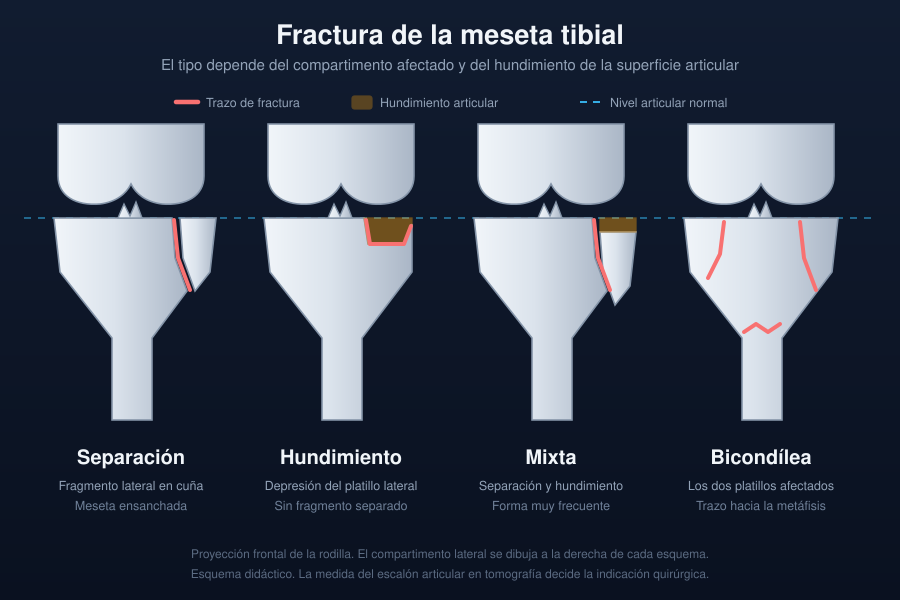

Ficha del catálogo
Fractura de la meseta tibial
- Sistema
- Óseo
- Modalidad
- TC
- Región
- Rodilla
- Dificultad
- Avanzado
Las fracturas de la meseta tibial son lesiones articulares producidas por una fuerza en valgo o por carga axial, típicas de atropellos y de caídas desde altura, y también de caídas banales en hueso osteoporótico. El compartimento lateral se afecta con mucha mayor frecuencia que el medial. El objetivo del estudio es medir el hundimiento de la superficie articular y el ensanchamiento de la meseta, porque de ello depende la indicación quirúrgica. Se asocian con frecuencia lesiones meniscales y ligamentarias que no se ven en la radiografía.
Técnica
Tomografía con cortes finos y reconstrucciones coronal y sagital, además de imágenes de volumen para planificar los abordajes. La radiografía frontal y lateral inicial sigue siendo la puerta de entrada.
Qué observar
- Escalón articular medido en el plano coronal y en el sagital
- Hundimiento del platillo lateral con fragmento deprimido central
- Trazo vertical que separa un fragmento externo en cuña
- Ensanchamiento de la meseta respecto a los cóndilos femorales
- Extensión del trazo a la metáfisis con disociación metafisodiafisaria
- Avulsión de la espina tibial o de la cortical lateral, marcador de lesión ligamentaria
Hallazgos
Fractura intraarticular de la extremidad proximal de la tibia con hundimiento y separación de fragmentos, hemartros y frecuente afectación del compartimento lateral.
Perlas
El lipohemartros en la radiografía lateral con rayo horizontal, con un nivel entre grasa flotante y sangre, indica fractura intraarticular aunque no se vea el trazo. Ante ese signo hay que completar el estudio con tomografía.
Diagnóstico diferencial
- Contusión ósea sin fractura
- Edema medular en resonancia sin trazo ni escalón articular.
- Fractura por insuficiencia subcondral
- Línea subcondral paralela a la superficie sin conminución ni traumatismo relevante.
- Fractura de la espina tibial aislada
- Fragmento en la eminencia intercondílea con superficie articular indemne.
Simuladores
- Surco del tendón poplíteo en el cóndilo lateral
- Vasos nutricios metafisarios
- Artefacto de volumen parcial en cortes gruesos
Por modalidad
- RX
- Detección inicial y valoración del lipohemartros
- TC
- Estándar para medir el hundimiento y planificar la cirugía
- RM
- Identifica lesiones meniscales, ligamentarias y fracturas ocultas
Protocolo
Radiografía frontal y lateral, seguida de tomografía con reconstrucciones multiplanares. Resonancia diferida cuando persiste inestabilidad tras la consolidación.
Clasificación
La clasificación de Schatzker ordena estas fracturas en seis tipos según afecten al platillo lateral, al medial o a ambos y según exista disociación entre metáfisis y diáfisis.
Errores frecuentes
- Medir el hundimiento solo en el plano coronal y subestimarlo
- No reconocer el lipohemartros como signo indirecto de fractura
- Olvidar buscar la avulsión de la cortical lateral asociada a rotura del ligamento cruzado anterior

rodilla meseta tibial schatzker lipohemartros fractura articular hundimiento trauma